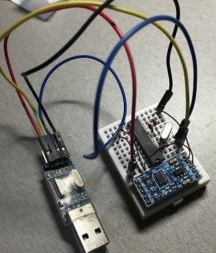
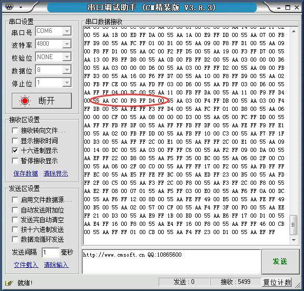
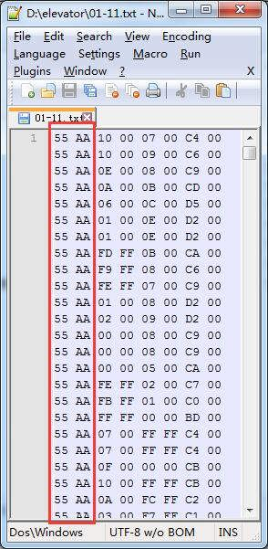
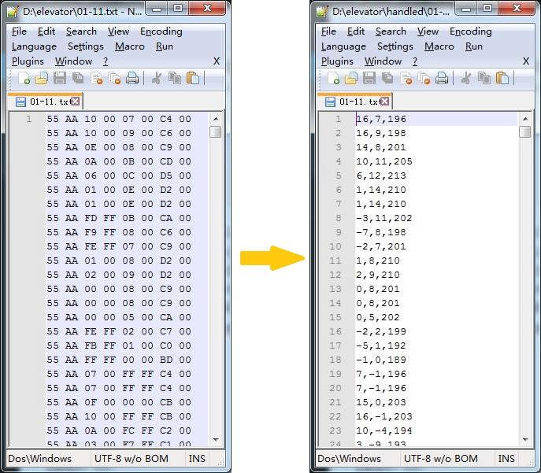
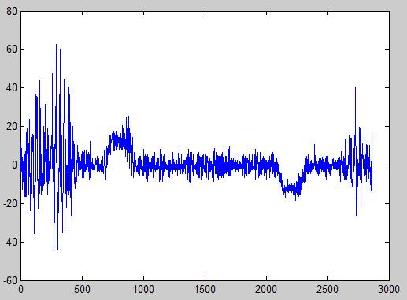
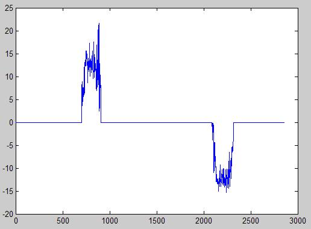
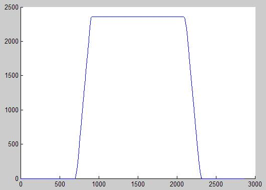

这是一个IBM的实验项目——用加速度计估算升降式电梯上升或者下降的高度。
这个项目可行吗？理论上应该是可行的。当人在等待电梯的时候，竖直方向上速度为0,。进入电梯后，电梯开始向上加速时，测到的竖直加速度应该会大于g，而当电梯加速完毕进入匀速运动后，测到的竖直加速度应该等于g，而当电梯减速到停止时，测到的竖直加速度应该小于g。那么，把测量到的加速度值减去g，就是电梯本身的加速度了。对加速度进行一次积分，就是速度。对速度再进行一次积分，应该就是高度了。
实际项目中，难点就是如何判断某段加速度是由电梯产生的，或者说，如何把电梯的加速度抽取出来。
=================阶段一：加速度采集装置设计================
首先肯定是采集加速度数据。我用的是ADXL345与STC12C2052的组合。硬件连接很简单，ADXL345的SCL连接STC12C2052的P1^0引脚，ADXL345的SDA连接STC12C2052的P1^1引脚。ADXL345的+5V引脚和GND引脚直接连接到电源即可。单片机使用12MHz的晶振。实物图如下：

代码分为types.h、i2c.h、i2c.c、buffered_uart.h、buffered_uart.c和main.c共六个文件。其中types.h、i2c.h和i2c.c可以在《51单片机使用I2C总线》中找到，无需任何修改。buffered_uart.h和buffered_uart.c可以在《为51单片机打造带接收缓冲区的串口（Buffered Uart）》中找到，无需任何修改。
main.c如下：
#include "reg51.h"
#include "types.h"
#include "i2c.h"
#include "buffered_uart.h"
#define ADXL345_ADDR 0x53
void main()
{
uint8 t_buffer[4];
//初始化串口缓冲区
uart_init(4800,t_buffer,4);
//不断读取DEVICE_ID，直到读到0xE5，说明正常
while(i2c_read(ADXL345_ADDR,0x00)!=0xE5);
//设置测量范围为±16g，精度13位
i2c_write(ADXL345_ADDR,0x31,0x0B);
//采集速率设定为50Hz
i2c_write(ADXL345_ADDR,0x2C,0x09);
//电源模式
i2c_write(ADXL345_ADDR,0x2D,0x08);
while(1)
{
uint8 t_data[6];
uint8 t_i;
i2c_multi_read(ADXL345_ADDR,0x32,6,t_data);
uart_write(0x55);
uart_write(0xAA);
for(t_i=0;t_i<6;t_i++)
uart_write(t_data[t_i]);
}
}
代码编译、烧录之后，打开串口调试工具，波特率设为4800，可以看到装置源源不断地输出采集的数据了：

可以从代码中看出，单片机每次采集6个字节的数据，然后先通过串口输出0x55,0xAA，然后再把这6个字节输出。因此以0x55,0xAA开头的8个字节为一组。6个字节的数据分别是XL,XH,YL,YH,ZL,ZH，即x轴数据的低字节、x轴数据的高字节、y轴数据的低字节、y轴数据的高字节、Z轴数据的低字节和Z轴数据的高字节。
之所以选取0x55,0xAA作为起始标记，是因为6字节的数据是不可能出现0x55,0xAA这么连续的两个字节的。这是为什么呢？ADXL345输出的每一个轴上的数据是一个13位有符号整数，但是因为要用16位来表示，所以要做符号位扩展。也就是说，如果采集到的数据是正数，那么高4位都是0（第12位（从0计）为符号位0，进行符号扩展后，高4位都是0），低12位的值就是采集到的数据；如果采集到的是负数，那么高4为都是1（第12位（从0计）为符号位1，进行符号扩展后，高4位都是1）。因此，每个轴的16位数据高4位要么都为0，要么都为1。而0x55,0xAA都是两个0和1交替的数值，所以6字节的数据不可能产生相连的0x55,0xAA这两个字节。
====================阶段二：十六进制数重组=================
用串口调试助手就可以把读到的十六进制数存入文件中。存入文件后，手动检查一下数据，是不是8字节一组、以0x55,0xAA对齐，如图：

之后就需要把十六进制数据重组一下，变成人类可读的十进制数据。我用的是Java，代码如下：
import java.io.BufferedReader;
import java.io.FileInputStream;
import java.io.IOException;
import java.io.InputStreamReader;
public class Main
{
public static void main(String[] args) throws IOException
{
String file="D:/elevator/16-01.txt";
BufferedReader reader=new BufferedReader(new InputStreamReader(new FileInputStream(file)));
String rawData=reader.readLine();
reader.close();
String[] groups=rawData.split("55 AA ");
for(int i=0;i<groups.length;i++)
{
String group=groups[i];
String[] bytesInStr=group.split(" ");
if(bytesInStr.length==1)
continue;
if(bytesInStr.length!=6)
throw new IllegalArgumentException("wrong data");
int accx=trans(Integer.parseInt(bytesInStr[1]+bytesInStr[0],16));
int accy=trans(Integer.parseInt(bytesInStr[3]+bytesInStr[2],16));
int accz=trans(Integer.parseInt(bytesInStr[5]+bytesInStr[4],16));
System.out.println(accx+","+accy+","+accz);
}
}
private static int trans(int num)
{
if((num&0xF000)!=0)
num=(~0xFFFF)|num;
return num;
}
}
代码很简单，就是读取文件内容，以“55 AA”分割，然后遍历所有子串，把子串转换成三个整数。这里需要注意的就是trans()这个方法。这个方法通过num&0xF000来判断最高的4位是否为0或为1，如果为1，则通过(~0xFFFF)|num的方法把16位有符号整数扩展成32位有符号整数。因为0xFFFF是高16位都为0，低16位都为1的32位有符号整数，那么~0xFFFF就变成了高16位都为1，低16位都为0的32位有符号整数。又因为num的高4位都是1，所以相“与”之后，相当于在num之前加了16个1，达到符号位扩展的目的。
输入输出的对比如图：

====================阶段三：采集数据=================
接下来就是采集数据。其实采集数据完全可以在第一步之后进行的。事实上，我也是先采集了数据然后再开始写Java的代码进行重组的。其实采集数据没有什么技术含量，就是电脑上插上嵌入式装置，然后捧着电脑着魔一样坐电梯。。。
中间的种种傻逼事就不说了。很高兴的是，这天好基友刚好来南大看我，于是帮我一起弄，于是这个傻逼的锅就有人一起分担了哈哈。贴一张朋友圈截图留作纪念：
采集的数据共有9份，分别是01-11.txt、01-13.txt、01-15.txt、01-16.txt、04-01.txt、11-01.txt、14-01.txt、15-01.txt和16-01.txt。文件名表示了从几楼乘坐到几楼。经过Java预处理之后的数据：data_pre_handled.rar。
===================阶段四：用MATLAB分析数据===============
有了数据之后就可以分析数据了。为了快速实现算法原型，我首选MATLAB咯。我先一段一段演示我的代码，然后再最后给出完整的代码。
首先，我们需要读取原始数据文件，然后变成x,y,z三个数组。以01-11.txt为例，代码如下：
[x,y,z]=textread('rawData/01-11.txt','%n%n%n','delimiter',',');
这段代码的意思就是从“rawData/01-11.txt”中读取数据，每行三个数字，以“,”作为分隔符。执行完之后，x,y,z分别存储了三个轴上的加速度数据了。
之后我们需要在对数据“做点手脚”。因为我发现我的ADXL345在Z轴上有一个比较大的直流偏执，经过校准，发现需要对Z轴采集到的数据加上46才是比较准确的数据。所以就需要这么一句：
z=z+46;
有了三个轴上原始的加速度分量之后，就可以计算合加速度了：
a=(x.^2+y.^2+z.^2).^(0.5);
之后就是需要去掉重力的影响。考虑到人在运动过程中，加速度基本分布在竖直方向上，也就是说和重力基本一个方向，所以直接从合加速度中减去其均值即可：
a=a-mean(a);
到这里，可以来看一下a是一个怎样的图像（先不要管数值的单位）：

其实电梯运动的特征已经很明显了，可以看到大约700~900的位置有一段“凸起”，而大约2200~2400的位置有一段“凹陷”。“凸起”就是电梯向上加速的过程，而“凹陷”就是电梯向下加速（也就是向上减速）的过程。而“凸起”和“凹陷”之间的一段平坦的过程其实就是电梯匀速运动的过程。
于是现在的关键就是，如何把电梯运动数据过滤出来，而把其他的运动数据清理掉。这个可以参考文献《To Lin IEEE 06605846》。文献中说，它们统计了80种不同的电梯，发现加速过程最短也有1.2秒（文献最后改进中说道把1.2秒改为1.0秒）。如果在某个1.0秒的窗口内，加速度都为正或者都为负，那么就认为这些数据都是电梯运动产生的。
为了排除电子噪音等随机因素的扰动所带来的偶然性，我先把加速度数据进行一次移动平均，周期为4：
winSize=4; a=filter(ones(1,winSize)/winSize,1,a);
之后，就可以使用滑动窗口的算法进行过滤了：
len=length(a);
b=zeros(1,len);
winSize=60;
for i=winSize+1:len-winSize
if (a(i:i+winSize)>=0)
b(i)=a(i);
else if (a(i-winSize:i)>=0)
b(i)=a(i);
else if (a(i:i+winSize)<=0)
b(i)=a(i);
else if (a(i-winSize:i)<=0)
b(i)=a(i);
end;
end;
end;
end;
end;
a=b;
算法其实意思很简单，对于某个点i，如果i的符号与前面的窗口中所有数据的符号相同，或者与后面的窗口中所有数据的符号相同，那么就保留其值，否则为0。
可以看一下过滤之后的数据图像（先不要管数值的单位）：

看起来挺棒的。接下来就需要确定电梯开始运动时间和结束运动时间。这个太容易了！第一个不为0的点就是开始时间，最后一个不为0的点就是结束时间。代码如下：
startPos=-1;
endPos=-1;
for i=1:len
if a(i)~=0 && startPos==-1
startPos=i;
end;
if a(i)~=0
endPos=i;
end;
end;
接下来就是在开始时间与结束时间之间，对加速度进行积分，得到速度，代码如下：
v=zeros(1,len);
for i=startPos:endPos
v(i)=v(i-1)+a(i);
end;
你可能会觉得这里有问题了。速度怎么能够直接加上加速度呢？加速度不应该是得乘以一个时间长度才能与速度进行加法运算吗？OK，我明白你的意思，你是说，代码应该像这样：
v=zeros(1,len);
for i=startPos:endPos
v(i)=v(i-1)+a(i)*dt;
end;
其中dt就是采样的时间间隔。你说的很对，从物理意义上确实应该这样。不过你是否注意到，因为速度v的初始值是0，所以累加完之后，v=a1*dt+a2*dt+a3*dt…=(a1+a2+a3+…)*dt。因此，我完全可以在累加完之后再进行乘法运算。虽然在数学上是等价的，但是在计算机的层面上，这么做可以省去非常多的乘法运算，而且也可以减少累积误差。
可以看一下速度图像（先不要管数值的单位）：

还是蛮符合逻辑的。之后就可以对速度进行积分得到距离了。代码如下：
d=zeros(1,len);
for i=startPos:endPos
d(i)=d(i-1)+v(i);
end;
一样地，这里面暂时不乘以时间单位。
可以看一下距离图像（先不要管数值的单位）：

哇塞，非常优美！
OK，最后再来考虑尺度变换问题，也就是量纲。从量纲上看，距离的单位是m，加速度的单位是m/s^2，时间的单位是s，所以在量纲上，存在“距离=加速度*时间*时间”的关系。我们采集的加速度并不是以m/s^2为单位的，而是以4mg为单位（参考ADXL345的手册，g为标准重力加速度9.8m/s^2），需要变换一次。我们所用的时间也不是以s为单位，而是1/sampleRate秒（sampleRate就是我们的采样频率），需要变换两次。测量得到采集装置的采样频率为60Hz，所以最终的尺度变换为：
d=d*(0.004*9.8)*(1/60)*(1/60);
为了以一个标准的时间尺度为x轴，可以定义一个时间序列：
t=[1:len]/60;
然后画出标准图像：
clf;
plot(t,d);
xlabel('时间(秒)');
ylabel('高度(米)');
最终的图像的横轴单位就是秒，纵轴的单位就是米：

可以看出，从1楼到11楼，电梯运行时间大约为25秒，上升高度大约为36米。平均每层3.6米高。挺符合常识的，具体准确性需要实地测量。
在最后给出完整的MATLAB代码：
elevator.m：
[x,y,z]=textread('rawData/01-11.txt','%n%n%n','delimiter',',');
z=z+46;
a=(x.^2+y.^2+z.^2).^(0.5);
a=a-mean(a);
winSize=4;
a=filter(ones(1,winSize)/winSize,1,a);
len=length(a);
b=zeros(1,len);
winSize=60;
for i=winSize+1:len-winSize
if (a(i:i+winSize)>=0)
b(i)=a(i);
else if (a(i-winSize:i)>=0)
b(i)=a(i);
else if (a(i:i+winSize)<=0)
b(i)=a(i);
else if (a(i-winSize:i)<=0)
b(i)=a(i);
end;
end;
end;
end;
end;
a=b;
startPos=-1;
endPos=-1;
for i=1:len
if a(i)~=0 && startPos==-1
startPos=i;
end;
if a(i)~=0
endPos=i;
end;
end;
v=zeros(1,len);
for i=startPos:endPos
v(i)=v(i-1)+a(i);
end;
d=zeros(1,len);
for i=startPos:endPos
d(i)=d(i-1)+v(i);
end;
d=d*(0.004*9.8)*(1/60)*(1/60);
t=[1:len]/60;
clf;
plot(t,d);
xlabel('时间(秒)');
ylabel('高度(米)');